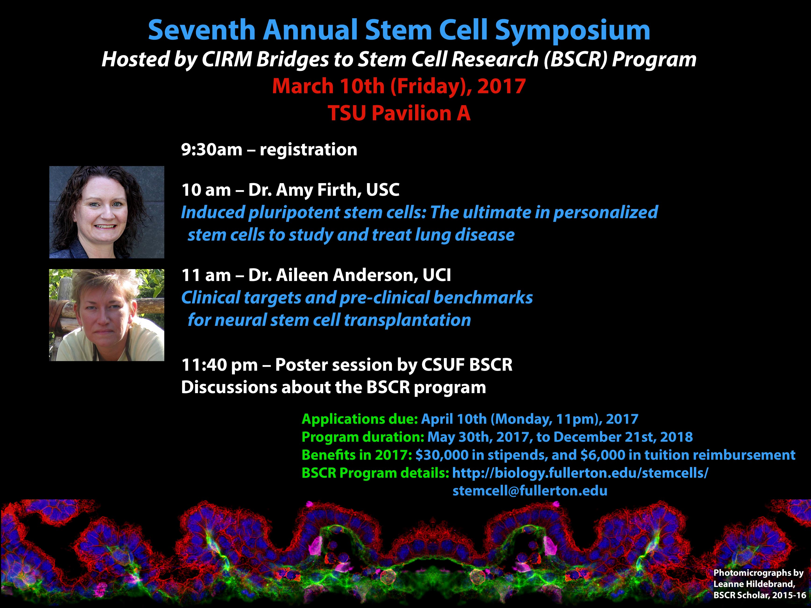

This site is maintained by Bridges To Stem Cell Research (BSCR).
To report problems or comments with this site, please contact stemcell@fullerton.edu.
Tell us about a web accessibility problem.
© California State University, Fullerton. All Rights Reserved.